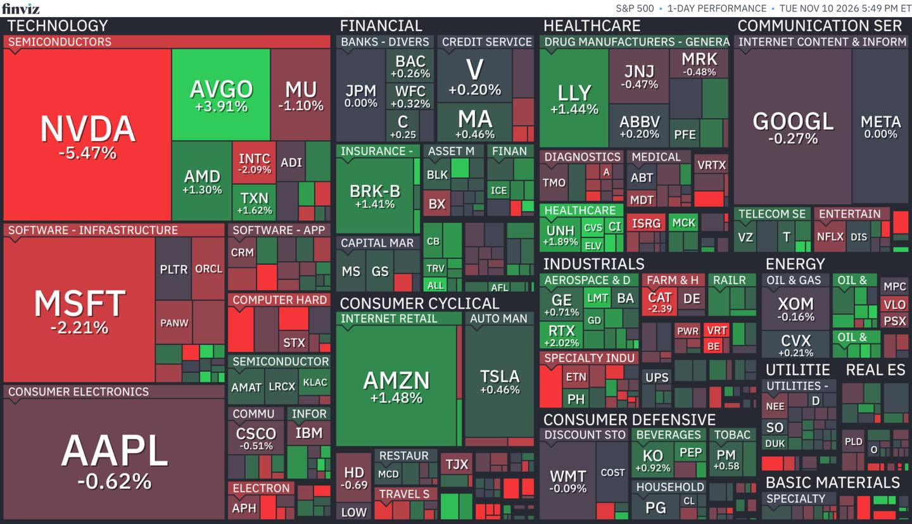

2026年11月11日 星期三（晨間更新）
📈 最新美股交易日＝11/10（二）收市：熱通脹中斷修復行情｜10月CPI月增0.4%（預期0.3%）、核心0.3%（預期0.2%）＝12月加息近全定價（12月期貨隱含約4.18厘、單日上修約0.30厘＝部分計價加息0.50厘）＝「利率更高更久」定價回歸｜標普 7,520.93（-0.38%）、費半 9,998.33（-0.35%）10,000得而復失｜美10年4.98厘、盤中一度升穿5厘關｜NVDA 168.89（-5.48%）兩日累計約-9.5%＝治理醜聞與利率雙殺｜Anthropic IPO推進（最高募904億美元、估值約1.4兆、最快11/19掛牌）＝AI一級市場估值錨測試｜恒指昨日24,557.04（+0.44%）＝匯豐+4.37%領漲藍籌
📊 市場決議
熱通脹一票否決修復行情：10月CPI月增0.4%（預期0.3%、9月0.6%）、核心0.3%（預期0.2%）＝通脹較上月降溫但物價壓力頑強；12月聯邦基金期貨隱含約4.18厘＝12月加息接近全數定價、並開始計價加息0.50厘可能（華勒：不排除大碼；洛根：至少兩次）。標普7,520.93（-0.38%）＝週一「4月以來最佳單日」後回吐；惟CoreWeave業績勝預期兼上調全年收入指引＝AI基建需求證明仍在；Anthropic IPO如常推進＝一級市場信心試金石。
🎯 今日定調
「通脹重燃＝利率更高更久定價回歸＝鎖息升級為首要動作」：①12月加息近全定價＝「今日鎖、明日更貴」由成立轉急迫＝美元短存立即執行、CPI後議價力提升②10年4.98厘盤中破5厘＝AI估值壓力計再響＝科技掛鉤與主題配置避開③NVDA 168.89（-5.48%）兩日累計約-9.5%＝治理與利率雙殺＝芯片掛鉤死心不變④金4,040.50（-1.80%）＝4,100得而復失＝實質利率壓力蓋過避險⑤恒指24,557.04（+0.44%）＝匯豐+4.37%領漲＝高息防守轉強、23,800規則續為閘（緩衝約3.1%）。
⚖️ 風險天平
中性偏防守、利率邏輯主導全市場：不利因素：CPI月增超預期、12月或一次加息0.50厘、10年4.98厘貼近5厘關、NVDA兩日近一成、BTC 73,544（-2.2%）續弱｜緩和因素：CoreWeave勝預期＋上調指引＝AI需求基本面證明、油價92橫行＝能源通脹壓力溫和、匯豐重上143＝港股高息板塊轉強、CoreWeave式業績驗證仍在——利率重定價期＝防守收息為主軸、AI敞口只減不加。
💹 市場定價
道指52,231.89（-0.30%）｜標普7,520.93（-0.38%）｜納指100 27,740.79（-0.60%）｜費半9,998.33（-0.35%＝10,000得而復失）
布蘭特92.06（-0.55%）｜期金4,040.50（-1.80%）｜10年4.98%（+0.10厘）＋2年4.73%（+0.17厘）
美元102.24（+0.58%）｜日圓158.72（續弱）｜BTC 73,544（-2.2%）｜VIX 19.46（-2.3%＝貼近20門檻橫行）
📝 一句話
「熱通脹中斷修復行情：12月加息近全定價＝鎖息立即升級為首要動作；AI估值與治理風險疊加＝不接刀、防守收息為主軸」
🔴 熱通脹＝12月加息近全定價、並開始計價0.50厘：10月CPI月增0.4%（預期0.3%）、核心0.3%（預期0.2%）＝物價壓力頑強；12月期貨11/10收95.825＝隱含約4.18厘＝單日上修約0.30厘；華勒（Waller）倫敦演說「12月加息可能性相當高、不排除一次加0.50厘」、洛根（Logan）「至少兩次0.25厘、節奏可加快」——「利率更高更久」定價回歸＝鎖息緊迫感升級：美元短存鎖息由「照做」升為「優先」；CPI後銀行議價力提升＝可爭取更高鎖息價。
🔴 NVDA 168.89（-5.48%）兩日累計約-9.5%＝治理醜聞與利率雙殺：醜聞升至國家安全層面——特朗普稱北京行期間不知情、《紐約時報》指當時國務卿魯比奧已通報情報、《金融時報》指商務部延遲將Megaspeed列入貿易黑名單＝AI企業間諜風險頭條化；若調查涉出口管制違規＝罰款／法律責任／銷售限制尾部風險（王董）——治理與利率雙重壓力＝AI龍頭風險溢酬難快速回落；芯片掛鉤死心不變、AI相關敞口不回補。
🟡 美10年4.98厘＝5厘關口爭奪戰＝AI估值壓力計再響：官方11/10讀數+0.10厘、盤中一度升穿5厘後回落（王董）；2年4.73厘（+0.17厘）＝加息定價直接反映、2s10s 0.25厘＝熊市變平；美銀視角：市場憂通脹更黏＝聯儲局明年更積極加息＝現金流折現壓縮＝科技股估值重調壓力（王董）——10年企穩5厘上方＝AI估值壓力持續＝科技主題與高估值板塊避開；長債基金待息率見頂回穩方再評。
🟡 恒指24,557.04（+0.44%）防守轉強但23,800規則續為閘：匯豐143.30（+4.37%）重上143領漲藍籌、中銀香港51.50（+1.38%）＝銀行高息板塊資金回流；惟阿里101.60（-2.87%）、騰訊417.80（-0.14%）＝科網個別發展；23,800緩衝約3.1%——高息權重緩衝邏輯不變：跌回23,800下方即暫停掛鉤重開評估；今日開市觀察美息上升會否壓制港股反彈延續性。
恒生指數
24,557.04
▲ +0.44%（11/10收；匯豐+4.37%領漲＝高息防守轉強）
道瓊斯
52,231.89
▼ -0.30%（11/10收；熱通脹回吐＝修復中斷）
S&P 500
7,520.93
▼ -0.38%（11/10收；4月以來最佳單日後回吐）
納斯達克100
27,740.79
▼ -0.60%（11/10收；利率敏感科技領跌）
費城半導體
9,998.33
▼ -0.35%（11/10收；10,000得而復失、內部分化）
布蘭特原油
92.06
▼ -0.55%（11/10收；急瀉後92橫行＝中樞下移企穩）
黃金（期金）
$4,040.50
▼ -1.80%（11/10收；熱通脹實質利率壓力＝4,100得而復失）
美10年債息
4.98%
▲ +0.10厘（11/10官方；盤中一度破5厘＝AI估值壓力計）
美2年債息
4.73%
▲ +0.17厘（11/10官方；加息定價直接反映＝熊市變平）
美元指數
102.24
▲ +0.58%（11/10收；熱通脹避險買盤回歸）
📡 收市數據（11/11 06:40-06:57 HKT核實）——美股＝11/10（二）收市（熱通脹中斷修復行情；Yahoo日線bar核實：標普-0.38%、納指100-0.60%、費半-0.35%、道指-0.30%自算吻合；VIX 19.46、-2.3%＝貼近20門檻）；恒指24,557.04＝Yahoo meta核實（11/10 24,557.04 vs 11/9 24,448.95＝+0.44%自算；日線bar滯後11/9＝以meta為準）｜布蘭特92.06（-0.55%）／金4,040.50（-1.80%）／美元102.24（+0.58%）＝11/10期貨結算｜官方曲線（11/10最新一筆）：2年4.73%、3年4.74%、5年4.81%、7年4.89%、10年4.98%、20年5.39%、30年5.35%、2s10s 0.25厘＝CPI日熊市變平（2年+0.17厘＞10年+0.10厘）｜2年期期貨11/10結算102.0（-0.35價格）＝約+0.16厘＝與官方4.73%（+0.17厘）吻合｜EFFR 3.88%（NY Fed 11/09最新）｜12月聯邦基金期貨95.825（11/10結算）＝隱含約4.18厘（11/9結算96.1225＝3.88厘）＝單日上修約0.30厘＝12月加息近全定價、部分計價0.50厘｜美股收市個股（11/10）：AAPL 348.51（-0.62%）、NVDA 168.89（-5.48%、兩日累計約-9.5%＝治理與利率雙殺）、AMD 515.21（+1.30%）、AVGO 331.98（+3.91%）、MU 725.11（-1.10%）、DELL 334.38（-3.44%）、MSFT 533.16（-2.20%）、META 641.39（持平）、ORCL 117.98（-1.51%）、PLTR 168.82（-0.22%）、ADBE 236.70（-0.26%）、DDOG 178.40（-0.68%）、TSLA 379.78（+0.46%）、CRWV 48.73（-0.51%、業績勝預期仍隨大市回吐）｜港股個股（11/10收）：騰訊417.80（-0.14%）、匯豐143.30（+4.37%、重上143＝藍籌最強）、阿里101.60（-2.87%）、小米30.60（+1.66%）、美團75.50（+0.47%）、中銀香港51.50（+1.38%）、中海油22.76（-2.57%、跌穿23關）、2840.HK 2,938（11/9收定格、日線滯後；金價11/10回吐1.80%＝留意2,900關）｜即時：BTC 73,544（11/11晨、-2.2%續弱）｜日圓158.72（11/11晨即時、續弱）｜王董大盤籌碼＝已納入（11/11 06:49 post＋Finviz heatmap）；FB解密系列＝今日暫缺
📊 聯儲局利率路徑定價（焦點：12月加息近全定價——12月期貨隱含約4.18厘＝單日上修約0.30厘＝部分計價加息0.50厘；10月CPI月增0.4%超預期＝通脹壓力頑強＝12/15-16 FOMC加息為基準情境；油價92橫行＝能源分項壓力溫和＝不足以對沖核心黏性）
減息維持不變加息
現行利率3.75%-4.00%（EFFR 3.88%、NY Fed 11/09最新）；12月聯邦基金期貨11/10結算95.825＝隱含約4.18厘（11/9結算96.1225＝3.88厘）＝單日上修約0.30厘＝市場幾乎全數定價12月加息0.25厘、並開始計價0.50厘可能；華勒「12月加息可能性相當高、不排除大碼」＋洛根「至少兩次、節奏可加快」＝12/15-16 FOMC加息為基準情境
官方曲線（11/10最新一筆）：2年4.73%、3年4.74%、5年4.81%、7年4.89%、10年4.98%、20年5.39%、30年5.35%；2s10s 0.25厘＝CPI日熊市變平（2年+0.17厘快過10年+0.10厘）＝短端加息定價主導。10年期貨4.98%（+0.12厘）＝盤中一度升穿5厘後收4.98厘＝5厘關口爭奪戰＝AI估值壓力計。

Finviz S&P 500 板塊熱力圖（11/10）
🗣 最新市況解讀（晨間更新 · 美股＝11/10（二）熱通脹中斷修復行情收市；港股＝11/10收24,557.04（+0.44%）；金/油/美元＝11/10期貨結算 · Bloomberg 11/11晨間批次（Morning Briefing Asia「Anthropic's big moment」：Anthropic IPO最高募904億美元、全攤薄估值約1.4兆美元、七位聯合創辦人合共售股17.5億美元／Nvidia醜聞升級：特朗普稱北京行不知情、魯比奧當時已通報情報、商務部延遲將Megaspeed列入黑名單＝AI企業間諜風險上升／熱通脹令國債急跌股票回吐＝12月加息呼聲鞏固：華勒不排除大碼、洛根主張至少兩次／CoreWeave上調全年收入指引兼季度勝預期／IBM最大部門停止部分職位移民擔保）＋王董大盤籌碼（11/11 06:49 post）已融入 · FB解密系列＝今日暫缺）
【Macro】全球大盤與宏觀環境
- 熱通脹中斷修復行情＝「買跌」邏輯被一票否決：標普7,520.93（-0.38%）＝週一「4月以來最佳單日」後即時回吐；納指100 27,740.79（-0.60%）＝利率敏感的科技股領跌；10月CPI月增0.4%（預期0.3%、9月0.6%）＋核心0.3%（預期0.2%）＝通脹較上月降溫但核心壓力頑強＝12月加息近全定價——超跌修復行情需要「通脹受控」前提＝前提已被推翻＝AI相關敞口只減不加、防守收息為主軸。
- 12月加息近全定價＋0.50厘計價啟動＝「利率更高更久」回歸：12月期貨95.825＝隱含約4.18厘＝單日上修約0.30厘＝不只是定價一次0.25厘、更開始計價更大動作；華勒（Waller）倫敦演說「12月加息可能性相當高、不排除一次0.50厘」、洛根（Logan）「至少兩次0.25厘、節奏可加快」（Bloomberg）；本次CPI因去年政府關門致2025年10月數據缺失＝無年增率比較基礎＝單看月增率不足，須並看核心變化與週五PPI以判斷企業成本壓力是否真正下降（王董）——「今日鎖、明日更貴」由成立轉急迫＝美元短存鎖息立即執行；CPI後銀行議價力提升＝鎖息議價可進取。
- 長端5厘爭奪戰＝AI估值壓力計再響：10年4.98厘（官方+0.10厘）盤中一度升穿5厘後回落（王董）；美銀指出市場憂通脹比預期更黏＝迫使聯儲局明年更積極加息＝科技股現金流折現價值受壓縮＝估值重調壓力（王董）；2年4.73厘（+0.17厘）＝短端加息定價直接反映、2s10s 0.25厘＝熊市變平——10年企穩5厘上方＝AI估值壓力持續＝長債基金與長端配置待息率見頂回穩；債市作為AI行情壓力計＝5厘為心理與技術雙重關口。
- 油價92橫行＝能源通脹壓力溫和：布蘭特92.06（-0.55%）＝週一急瀉5.85%後於92附近企穩＝中東溢價拆除後中樞下移；油價橫行＝CPI能源分項壓力溫和＝惟核心黏性才是本次超預期的主因——油價回落緩和企業成本（王董框架）＝惟不足以對沖核心通脹黏性＝聯儲局路徑仍以核心為準；油掛鉤兩邊均不追；地緣（伊朗路徑、國防部長彈劾決議）反覆＝溢價拆除進度或再波動。
- 港股逆市微漲＝高息防守與銀行主導：恒指24,557.04（+0.44%）＝匯豐+4.37%領漲藍籌、中銀香港+1.38%＝銀行板塊資金回流；阿里-2.87%／騰訊-0.14%＝科網個別發展——美息上升環境下港股高息防守邏輯強化＝匯豐重上143為板塊轉強訊號；23,800規則續為閘（緩衝約3.1%）；港美息差隨美息上升擴大＝美元資產息口優勢增加。
- 政策與地緣噪音：共和黨議員對國防部長Hegseth的彈劾決議延續＝伊朗戰爭路徑政治化；IBM停止最大部門部分職位的移民擔保（Bloomberg）＝特朗普政府簽證收緊延續＝科技業人才成本摩擦——地緣與政策噪音不影響利率路徑基準判斷；企業層面留意人才政策對科技業成本的邊際影響。
【Sector】關鍵板塊輪動
- 費半10,000得而復失＝AI鏈內部繼續分化：費半9,998.33（-0.35%）＝週一+6.85%後未能延續；AMD 515.21（+1.30%）／AVGO 331.98（+3.91%）抗跌 vs NVDA 168.89（-5.48%）／MU 725.11（-1.10%）／DELL 334.38（-3.44%）＝市場並非全面否定AI需求，而是在利率上升與政策不確定下重新調整個股風險溢價（王董）——分化格局＝避開治理風險主角、但整體AI敞口仍只減不加＝單日抗跌非趨勢逆轉＝芯片掛鉤死心不變。
- AI基建財報驗證＝CoreWeave勝預期：CoreWeave上調全年收入指引兼季度業績勝預期＝債務負擔疑慮暫緩（Bloomberg）；惟CRWV 48.73（-0.51%）仍隨大市回吐＝AI類股經大幅修正後，財報要求已從「營收成長」升級為「前瞻能否支撐偏高本益比」（王董）；思科與應用材料業績續為觀察點（王董）——業績期＝AI基建需求證明與估值支撐的雙重測試＝前瞻指引不如預期即加重回調壓力。
- Anthropic IPO＝AI資本網絡總動員＝估值錨測試：定價區間70-78美元、最高募904億美元、全攤薄估值約1.4兆美元、最快11/19掛牌；NVDA與Google各以IPO價認購100億美元、AMD／博通／美光／微軟／台積電參與260億美元私募、亞馬遜與Google已持股（王董）＝從晶片、雲端到大模型的資本合作網絡背書；上市文件另揭露觸及內部AI安全門檻＝AI參與研發令進步速度約翻倍（兩年進展壓縮至一年）＝提高安全標準而非停止研發（王董）；部分文件配合9/29行政命令以SI取代AI用語（王董）——熱通脹環境下路演定價成敗＝AI一級市場估值錨的即時測試：定價順利＝錨回穩、遇冷＝二級市場AI估值壓力延續；科技主題基金（U45816）以觀察為主。
- 軟件與大型科技＝利率壓力直接反映：MSFT 533.16（-2.20%）＝大型科技亦受「更高更久」定價壓迫；ADBE 236.70（-0.26%）／DDOG 178.40（-0.68%）＝大市回吐日相對抗跌但獨立弱勢未變——AI重定價由芯片向軟件擴散的判斷不變＝高估值軟件股重定價週期未完；軟件相關掛鉤與主題配置維持避開。
【Company】關鍵個股與事件
- NVDA 168.89（-5.48%）兩日累計約-9.5%＝治理與利率雙殺：醜聞升至國家安全層面——特朗普稱北京行期間不知情、《紐約時報》指當時國務卿魯比奧已通報美方情報、《金融時報》指商務部延遲將Megaspeed列入貿易黑名單（Bloomberg）＝AI企業間諜風險頭條化；王董框架：真正風險＝高度依賴創辦人領導的關鍵人物風險＋若調查涉出口管制違規的罰款／法律責任／更嚴格銷售限制尾部；惟正式結果公布前＝必須區分市場恐慌與實際基本面變化——AI晶片訂單、數據中心建設需求暫無實質衝擊證據（王董）——治理風險與利率壓力疊加＝風險溢酬難快速回落；芯片掛鉤死心不變、科技主題不加注。
- 匯豐143.30（+4.37%）＝重上143＝港股藍籌最強：140關口收復且單日急升＝銀行板塊轉強訊號確認；高息防守屬性與資金回流雙支持＝本地銀行息差與承接力預期改善——匯豐轉強＝恒指高息權重緩衝增強＝23,800規則防守可信度上升；140上方企穩為板塊強勢延續條件。
- 中海油22.76（-2.57%）＝跌穿23關＝技術轉弱：油價92橫行＝盈利預期壓力、大市回吐＝板塊資金流出——23關失守＝趨勢轉弱＝接貨觀察轉慎：緩衝擴大與左側風險並存＝待21.5-22.5帶與油價方向同步確認；油價中樞下移期＝能源板塊配置維持中性。
- BTC 73,544（-2.2%）＝加密弱勢加深：跌穿75,000平台後續下行＝風險偏好落後指標；日圓158.72續弱＝利差邏輯下避險屬性未回歸——加密結構續避開＝反彈日不追；BTC重上80,000前加密beta視為弱勢。
- 科網內部輪動＝權重穩定、個股分化：騰訊417.80（-0.14%）持平＝權重龍頭穩定；阿里101.60（-2.87%）續弱 vs 小米30.60（+1.66%）／美團75.50（+0.47%）反彈——科網beta未同步＝個股事件與資金輪動主導＝港股掛鉤以指數層面23,800規則為閘、個股掛鉤避開單一事件股。
- CoreWeave 48.73（-0.51%）＝勝預期仍回吐：上調全年收入指引＝AI基建需求與債務疑慮暫緩（Bloomberg）；惟股價隨大市回吐＝估值壓力蓋過業績利好——「業績好不等於股價升」＝利率重定價期估值權重大於基本面＝AI基建鏈配置仍以防守為先。
【Sentiment】市場情緒
- VIX 19.46（-2.3%）＝貼近20門檻橫行：週一急落後未再升＝恐慌受控、惟熱通脹下亦無修復空間＝波動備案維持「中波動」（掛鉤年期上限兩週、緩衝要求略降不撤）——VIX重上20以上＝備案回升：緩衝要求恢復上調＋年期回一週封頂；槓桿結構絕對零不變。
- 避險回歸但結構分化＝利率邏輯主導全市場：美元102.24（+0.58%）＝熱通脹避險買盤回歸；日圓158.72續弱＝避險屬性未回歸；金價-1.80%＝實質利率壓力蓋過避險需求——金與BTC同弱、美元獨強＝通脹交易而非衰退交易＝防守以短存鎖息與收息為主、長債與黃金待利率見頂。
- 輪動方向＝估值防禦與高息板塊：資金離開高估值AI與加密、流向銀行／高息防守（匯豐+4.37%、中銀香港+1.38%）＝「利率更高更久」下的配置再平衡；AI鏈內部分化＝重新評估個股風險溢價而非全面撤離（王董）——情緒結構由「博修復」轉回「防守定價」＝掛鉤緩衝要求維持、注碼拆細；高息與短存為配置核心。
【Micro 金價】
- 路徑：4,149.50（11/9期貨結算）→4,040.50（11/10收、-1.80%）＝4,100得而復失；2840.HK 2,938（11/9收定格、日線滯後）＝隨金價回吐、留意2,900關。
- 驅動：熱通脹→實質利率上升（10年4.98厘）＋美元+0.58%＝雙重壓力；央行買盤支持仍在＝惟短期讓位利率邏輯——通脹超預期本為金的傳統利好＝但「加息反通脹」路徑下實質利率上行佔主導。
- 技術面：4,100轉為阻力（11/10收市確認跌穿）、4,000關＝本輪避險邏輯防線；回穩4,100上方方重拾避險主導。
- 操作：金掛鉤＝緩衝要求上調＋年期短封頂不變；4,000關失守＝避險邏輯破壞＝相關掛鉤暫停重開評估；2840.HK守2,900＝實物金ETF配置節點觀察；金油背馳＝多元商品配置（U43980）分散價值持續。
📌 總結
- 定調——「熱通脹一票否決修復行情」：10月CPI月增超預期＝12月加息近全定價＝「利率更高更久」回歸＝AI估值壓力與治理風險疊加＝不接刀、AI相關敞口不回補；修復行情重啟需通脹數據回順＋費半重企10,000以上。
- 息口——鎖息升級為首要動作：12月期貨隱含約4.18厘＝單日上修0.30厘＝「今日鎖、明日更貴」轉急迫＝美元短存立即執行；若12月加0.25-0.50厘＝今日價將顯著落後＝CPI後議價力提升、鎖息從「照做」升為「優先＋進取議價」；週五PPI為下一驗證點（王董框架）。
- 長端——5厘爭奪戰：10年4.98厘盤中破5＝AI估值壓力計再響＝長債基金（U45838）待息率見頂回穩方再評；2s10s 0.25厘熊市變平＝短端加息定價主導＝長債配置吸引力暫降。
- 港股——高息防守轉強：恒指24,557.04（+0.44%）＝匯豐+4.37%領漲＝銀行高息板塊資金回流＝23,800規則續為閘（緩衝約3.1%）；科網個別分化＝指數層面防守邏輯優於個股追逐；港美息差擴大＝美元短存息口優勢增加。
- RM部署：鎖息→美元1-3個月短存＋HSBC超短債（U45242）立即執行＋安聯浮動息（U45707）＝加息受惠升級；長端→法巴環球債券（U45838）＝10年4.98厘5厘邊緣＝待息率見頂回穩方再評；收息泊位→PIMCO收益II（U50021、約5.95%）＋宏利多元入息（U45660、約10.08%）＝收息防守核心；防禦位→施羅德靈活配置總回報（U45871、約6%月派）＝利率重定價期核心防禦；港股高息→恒生高息股30（U45624、7.52%）＝匯豐領漲下高息防守驗證、23,800規則為閘；金→4,100得而復失＝緩衝上調＋4,000關為防線；日圓158.72／BTC 73,544結構續避開。
ℹ️ 來源：Bloomberg（11/11晨間批次 Morning Briefing Asia「Anthropic's big moment」：Anthropic IPO最高募904億美元、全攤薄估值約1.4兆美元、七位聯合創辦人合共售股17.5億美元＋Nvidia醜聞升級（特朗普不知情／魯比奧當時通報情報／商務部延遲將Megaspeed列入黑名單＝AI企業間諜風險）＋熱通脹（10月CPI超預期）令國債急跌股票回吐＝12月加息呼聲鞏固（華勒不排除大碼、洛根主張至少兩次）＋CoreWeave上調全年收入指引兼勝預期＋IBM最大部門停止部分職位移民擔保）＋王董大盤籌碼（11/11 06:49 post：CPI無年增率基礎＝並看核心與週五PPI＋12月加息1碼篤定、2碼評估啟動＋美銀「通脹黏著＝明年更積極加息＝DCF壓縮」＋NVDA兩日約一成＝治理與AI基本面兩回事、出口管制尾部風險＋Anthropic定價70-78美元／NVDA與Google各100億認購／260億美元私募／11/19掛牌／AI安全門檻與SI用語）＋Finviz heatmap（11/10）＋FB解密系列＝今日暫缺＋Yahoo Finance實測（11/11 06:40-06:57 HKT：美股個股與指數＝11/10收市bar核實（標普-0.38%、納指100-0.60%、費半-0.35%、道指-0.30%自算吻合；VIX 19.46、-2.3%）；恒指24,557.04＝Yahoo meta核實（11/10 24,557.04 vs 11/9 24,448.95＝+0.44%自算；日線bar滯後11/9＝以meta為準）；布蘭特92.06（-0.55%）／金4,040.50（-1.80%）／美元102.24（+0.58%）＝11/10期貨結算；BTC 73,544／日圓158.72＝11/11晨即時）＋美國財政部官方曲線（11/10最新一筆：2年4.73%、10年4.98%、20年5.39%、30年5.35%、2s10s 0.25厘）＋NY Fed EFFR 3.88%（11/09最新）＋聯邦基金期貨（12月11/10結算95.825＝隱含約4.18厘、單日上修約0.30厘）＋香港銀行公會HIBOR（11/6報價、最新可得：1個月2.561厘、3個月3.150厘、6個月3.304厘、12個月3.800厘）。
🏦 (1) 息口專區：港元利率環境與CD／TT MXI／Callable Linear／基金部署
聯儲局路徑（加息軌道、截至11/11晨間更新）：9/16加息0.25厘至3.75-4.00厘（2023年來首次）；10/28暫停不動、兩名委員投反對票、均主張應再加息；10月CPI月增0.4%（預期0.3%）＋核心0.3%（預期0.2%）＝12月加息近全定價：12月期貨11/10結算95.825＝隱含約4.18厘（11/9結算96.1225＝3.88厘）＝單日上修約0.30厘＝幾乎全數定價加息0.25厘、並開始計價0.50厘可能；華勒「12月加息可能性相當高、不排除一次0.50厘」＋洛根「至少兩次0.25厘、節奏可加快」；聯儲局9月官方預測（SEP，即聯儲局官方預測）：2027年利率中位數4.1厘＝路徑仍向上；下次會議12月15-16日＝加息為基準情境（10月CPI為會前最後一份CPI、週五PPI為補充驗證）。
美債息（官方11/10最新一筆）：官方2年期4.73厘（+0.17厘）／10年期4.98厘（+0.10厘）／20年期5.39厘／30年期5.35厘、2s10s 0.25厘＝CPI日熊市變平（短端加息定價快過長端）；10年盤中一度升穿5厘後收4.98厘＝5厘關口爭奪戰＝長端配置待息率見頂回穩；10年4.98厘＝法巴環球債券（U45838）待息率見頂回穩方再評。
港銀拆息HIBOR（銀行之間借貸的息率，定存價格跟它走；11/6報價、最新可得）：1個月2.561厘／3個月3.150厘／6個月3.304厘／12個月3.800厘——整體形態仍是「愈長期愈高」；與10/30讀數（1個月2.709／3個月3.213／6個月3.457／12個月3.941）對照＝四個期限全線回落＝港元拆息轉鬆＝港元定存議價空間暫受壓；同時美息上升＝港美息差擴大＝美元存款息口優勢增加（兌換風險如實提示）；年底IPO凍結資金＋年結因素＝後市拆息走向仍視乎資金面。
港元實際回報一覽（10/30讀數、最新可得）：大行3/6個月定存2.40厘、渣打12個月3.30厘、全場12個月上限3.55厘、恒生儲定賞4厘（2個月新資金）、港元貨幣基金MMF 2.28-2.81厘、活期儲蓄近乎零息（0.01厘）；外匯基金票據EFB（政府背書短債）91日2.82厘／364日3.34厘；全港存款20.64萬億（按年+7.7%）但貸存比僅70.3%（每100元存款只有約70元借出）＝大量資金仍在等出路。
| 產品 | 息口邏輯（通俗講法） | 現況／行動 |
|---|
| CD／定存 優先執行 | 12月加息近全定價（隱含約4.18厘）＝「遲些才鎖會否蝕息」成立且轉急迫＝息不僅不跌、反而趨升；若12月加0.25-0.50厘＝今日鎖定價將顯著落後＝「今日鎖、明日更貴」；CPI超預期後銀行議價空間打開＝鎖息議價可進取；港元拆息回落＝港元定存毋須搶、高息口（儲定賞4厘）先到先得 | 美元短存鎖息優先執行；大額鎖6-12個月（3.3-4.0厘區間、爭取上限）；分開1/2/3年期錯開到期＝每年都有一筆到期、可重新議定；港元短存先取儲定賞4厘／大行高息口 |
| TT MXI（匯率掛鉤存款） | 掛港元兌美元、兩段式方向判斷；引伸匯率（IER，產品隱含的掛鉤價）達7.85或以上＝貼近聯匯弱方保證區、不好碰；最新錨點：兩周期、觸發價7.8353、年化約4%（10/27） | 照錨監察、不預測匯價方向 |
| Callable Linear（可贖回定息票據） 定息鎖長 | 5年期、首年不可贖回（NC1，即發行方起碼一年內不可提早收回）＝年化定息5厘；今日對照＝10年期美債4.98厘（CPI後+0.10厘）、20年期5.39厘＝5厘與10年期僅差約0.02厘＝長端急升令定息優勢收窄＝短存與浮息相對吸引力短期上升、CL轉為觀察長端見頂訊號：長端若回軟、5厘鎖5年價值重現；定息不隨息口走低下跌＝「今日鎖5厘、將來存款息跌都照收5厘」；一年後發行方可贖回＝客戶面對再投資風險（好息不會長久＝更要留意時機）；適合驚長債價格波動但想鎖長息的穩健收息客 | 鎖長息替代腿＝觀察長端訊號再推；與定存錯開配搭（短存鎖流動性＋Callable Linear鎖5年）；發行商信用、5年期流動性（提前贖回有損）如實提示 |
| 港元貨幣基金（MMF）／現金泊位 | 加息軌道＝泊位息率跟拆息上移；低風險、隨時可贖回；惟拆息短期回落＝MMF收益率或略降；利率重定價期＝泊位流動性價值持續 | 2.28-2.81厘＝先泊貨幣基金收息；U45193＝流動性首選 |
| 基金（息口受惠鏈） | 浮息債U45707：派息隨市場息率浮動、12月加息近全定價＝加息直接受惠升級；超短債U45242：年期極短、利率風險低＝彈性版定存；收息基金U50021：月派約5.95%；長債U45838：10年4.98厘＝5厘邊緣＝息率急升期債價承壓＝待息率見頂回穩方再評 | 部署次序＝貨幣基金泊位→CD鎖6-12個月→浮息＋收息配置；12/15-16 FOMC前完成鎖息動作 |
💡 息口判決（通俗版）：美元方面，12月加息近全定價＝息不僅不跌、反而趨升＝「今日鎖、明日更貴」轉為急迫＝美元短存優先執行、並趁CPI後銀行議價空間打開爭取更高價；若聯儲局12月真的加0.25-0.50厘，今日鎖的息便顯得便宜＝鎖息動作趕在FOMC前完成；港元方面，拆息回落＝定存議價空間暫受壓＝毋須搶長鎖、先取儲定賞4厘等高息短窗；港美息差擴大＝同一筆資金、美元定存的息口優勢增加（匯率兌換風險如實提示）；10年4.98厘＝長債基金待息率見頂回穩＝不急；Callable Linear 5厘＝與10年期僅差0.02厘＝長端急升期短存浮息先行、長端回軟再鎖5年定息。
📊 (2) 基金表格（21隻，RM銷售直接用）
| 基金 | 代號 | 分類 | 特性/派息 |
|---|
| HSBC貨幣 | U45193 | 現金 | 流動性極高，現金管理首選；利率重定價期＝泊位候機 |
| HSBC超短債 重點 | U45242 | 極短債 | 低利率風險；12月加息近全定價（隱含約4.18厘）＝美元短存鎖息優先執行＝「今日鎖、明日更貴」轉急迫 |
| 安聯浮動息 重點 | U45707 | 浮息債 | 息率隨市場調整；10月CPI超預期＝12月加息近全定價——加息軌道上浮息債直接受惠升級＝息口受惠鏈首位 |
| PIMCO收益II 重點 | U50021 | 核心收息 | 月派息約5.95%；利率重定價期收息防守核心 |
| 法巴環球債券 觀察 | U45838 | 核心收息 | 環球投資級債；10年4.98%（+0.10厘）＝5厘邊緣＝息率急升期債價承壓＝待息率見頂回穩方再評；2s10s 0.25厘＝熊市變平＝長債吸引力暫降 |
| 法巴新興債 | U45817 | 核心收息 | 新興市場高息；美元強勢（102.24）＝新興債匯率與利差壓力＝重定價環境下防守優先、暫緩加注 |
| 東方匯理收益機遇 | U45769 | 多元資產 | A2美元月派息，年率化約8.2% |
| 宏利多元入息10%派 重點 | U45660 | 多元資產 | 年化派息約10.08%，收息客首選 |
| 普徠仕多元收益 | U45679 | 多元資產 | 多元收益來源，分散風險 |
| PIMCO收益增長 | U45553 | 多元資產 | 收益＋增長並重 |
| 恒生亞洲增長收益 | U45090 | 多元資產 | 聚焦亞洲，月派息約5.73%；恒指24,557.04（11/10收、+0.44%）＝高息防守轉強——23,800規則為閘、不搶反彈 |
| 施羅德靈活配置總回報 防禦位 | U45871 | 多元資產 | 月派約6%；無基準限制靈活股債現金配置（Cash+3%絕對回報導向），極端市況可大幅轉持現金——利率重定價期仍為核心防禦配置 |
| 施羅德環球股債增長收息 | U45883 | 多元資產 | 月派約7.68%；環球股票32.8%＋環球債33.5%＋可換股債31.8%，存續期僅1.7年——短存續期在「更高更久」環境下優勢持續 |
| 恒生高息股30 ETF 防守驗證 | U45624 | 股票主題 | 派息率約7.52%；恒指24,557.04（11/10收、+0.44%）＝匯豐+4.37%領漲＝高息權重緩衝增強——23,800支持位為閘、跌回下方即暫停；不搶反彈 |
| 貝萊德系統分析高息股 | U44950 | 股票主題 | 派息率約8-10%＋期權增強；利率重定價＝系統化選股的防守性受考驗、暫緩加注 |
| 鄧普頓亞太入息 | U45722 | 股票主題 | 亞太區入息策略；利率重定價期＝暫緩大額、趨勢確認後評估 |
| 法巴科技創新 重點 | U45816 | 股票主題 | 科技創新主題；NVDA兩日累計約-9.5%＋10年4.98厘＝AI估值與利率雙重壓力——「賣鏟人＋現金牛＋有定價權」嚴選不變、調整市嚴禁加注；Anthropic IPO（估值約1.4兆、11/19掛牌）＝AI估值錨測試 |
| 摩根亞洲股票高息 重點 | U45501 | 股票主題 | 月派約8.08%；重倉台/韓/中科技龍頭＋沽亞洲指數Call期權增強收益——波動市期權金收入環境持續＝對沖收入上升對沖組合波動 |
| 富達可持續發展環球股息優勢 新研究 | U45565 | 股票主題 | 環球優質藍籌純股收息＋ESG篩選＝過濾「帳面高息但基本面脆弱」的價值陷阱；月派約9.45%（G類可從資本或總收益派息）——適合要每月現金流＋管治防守性的穩健至平衡型股票客；人民幣客戶另有對沖月派類（約9.47%） |
| 施羅德亞洲高息股債 | U44377 | 多元資產 | 亞洲高息股債雙效合一、經理人動態調配股債比例（波動時債券護航、向好時高息股帶動）；月派金額可變；支援跨境理財通WMC——亞洲分散邏輯受支持＝適合鍾情亞洲、攻守兼備的穩健收息客；人民幣客戶另有對沖月派類 |
| 施羅德AS商品基金 新研究 | U43980 | 商品/另類 | 累積型不派息；主動多元商品配置（能源39.3%/農產品27.5%/金屬23.0%）＋Active Roll克服展期轉月成本；最高可持33%現金國債避險（2008、2020實證）；零槓桿純長倉；與環球債券相關性-0.07——金回吐4,040與油92橫行＝金油背馳＝多元商品配置的單邊風險對沖價值；股債雙殺第三大避險支柱；2026 YTD +30.9%（1年+41.1%）大幅跑贏MSCI環球；PI專屬、風險評級4-5＝適合憂慮股債齊跌及地緣通脹、想在股債外開獨立賺錢路的高淨值客 |
💡 RM切入：今日主題「熱通脹中斷修復行情＝鎖息升級為首要動作」→第一句講「10月CPI超預期＝12月加息近全定價＝『今日鎖、明日更貴』轉急迫＝CPI後銀行議價空間打開＝鎖息要快、價要爭」；鎖息→「美元短存＋HSBC超短債（U45242）優先執行＋安聯浮動息（U45707）加息直接受惠；12/15-16 FOMC前完成鎖息；港元拆息回落＝先取儲定賞4厘短窗」；長端→10年4.98厘5厘邊緣＝法巴環球債券（U45838）待息率見頂回穩方再評；防禦→「施羅德靈活配置（U45871、約6%月派）極端市況可轉持現金＝利率重定價期核心防禦」；收息→PIMCO收益II（U50021、5.95%）與宏利多元入息（U45660、10.08%）＝現金流核心；長息替代→「Callable Linear（5Y NC1）年化5厘＝今日10年期4.98厘＝定息優勢收窄、觀察長端見頂訊號再推＝穩健收息客的鎖長息替代腿」；港股→「匯豐+4.37%領漲＝高息防守轉強＝恒生高息股30（U45624）23,800規則為閘」。
🎯 (3) ELN 表格
| 標的 | 邏輯 | 接貨機會 |
|---|
| 恒生指數ELN 整理觀察 | 恒指24,557.04（11/10收、+0.44%）＝高息防守轉強、守23,800上方（緩衝約3.1%）；23,800支持位規則為閘、跌回下方即暫停重開評估；VIX 19.46貼近20＝備案維持「中波動」、年期上限兩週 | 低（23,800規則確認後再評估） |
| 黃金ETF（2840.HK） 回吐觀察 | 期金4,040.50（-1.80%）＝4,100得而復失＝實質利率壓力蓋過避險；2840.HK 2,938（11/9收、日線滯後）＝隨金價回吐、2,900關監察；4,000關＝本輪避險邏輯防線；緩衝要求上調＋年期短封頂不變 | 觀察（4,000關確認守穩方再評） |
| 費半／晶片相關 死心 | 費半9,998.33（-0.35%）＝10,000得而復失；NVDA 168.89兩日累計約-9.5%＝治理與利率雙殺；10年4.98厘＝AI估值壓力計再響；重開需費半重企11,000以上＋醜聞與利率路徑明朗；年期短封頂、緩衝25% OTM以上紀律不變 | 低 |
| 中國海洋石油（0883.HK） 轉慎 | 22.76（11/10收、-2.57%）＝跌穿23關＝技術轉弱；油價92橫行＝板塊盈利預期壓力仍在；緩衝擴大與左側風險並存＝待21.5-22.5帶與油價方向同步確認 | 觀察（轉慎） |
| 匯豐（0005.HK） 轉強確認 | 143.30（11/10收、+4.37%）＝重上143＝140收復且單日急升＝銀行板塊轉強訊號確認；高息防守與資金回流雙支持；140上方企穩為強勢延續條件、回抽140附近為觀察節點 | 中（回踩140確認） |
| 小米（1810.HK） 回踩觀察 | 30.60（11/10收、+1.66%反彈）＝25.5為技術支撐參考（距約17%）＝不追高、回踩節奏視科網beta與利率壓力 | 低 |
⚠️ VIX 19.46貼近20＝波動備案維持「中波動」：掛鉤結構年期上限兩週、緩衝要求略降不撤、注碼拆細照舊；VIX重上20以上＝緩衝要求恢復上調＋年期回一週封頂；芯片掛鉤死心（NVDA治理與利率雙殺＝風險溢酬難回落）；黃金掛鉤＝4,100得而復失＝緩衝上調＋年期短封頂、4,000關失守即暫停；恒指掛鉤＝23,800規則為閘；油掛鉤兩邊均不追（中樞下移觀察）；軟件板塊續弱＝高估值軟件股重定價未完
💴 (4) MXI / 定存建議
美元定存：3個月期約 4.2-4.4厘，6個月期約 4.0-4.2厘（12月加息近全定價＝「今日鎖、明日更貴」轉急迫＝鎖息優先執行、趕在12/15-16 FOMC前完成；CPI後議價空間打開＝爭取區間上限）
港元定存：3個月期約 3.7-3.9厘（拆息回落＝議價空間暫受壓、高息短窗如儲定賞4厘先到先得；港美息差擴大＝美元定存息口優勢增加、兌換風險如實提示）
MXI結構性存款：掛鉤指數為主，潛在年化回報 5-7%（VIX 19.46＝中波動備案、年期上限兩週；黃金掛鉤＝4,100得而復失、緩衝要求上調＋4,000關為防線；指數掛鉤＝23,800規則為閘；芯片掛鉤死心）
💡 建議：利率重定價期＝現金／短存泊位優先（12月加息近全定價＝鎖息價值確定且急迫、美元短存優先執行）；長端——10年4.98%（+0.10厘）＝5厘邊緣、法巴環球債券（U45838）待息率見頂回穩方再評；黃金掛鉤4,040.50＝4,100得而復失＝緩衝要求上調、4,000關為防線；港股——匯豐領漲＝高息防守轉強、23,800規則為閘，中海油跌穿23關＝能源板塊轉慎；NVDA兩日累計約-9.5%＝治理與利率雙殺＝芯片掛鉤死心不變；本週關鍵：週五PPI（王董框架＝企業成本壓力驗證）＋10年5厘關爭奪＋NVDA醜聞調查進展＋Anthropic IPO定價（11/19掛牌）＋12/15-16 FOMC（加息為基準情境）。
🔍 今日關注 Watchlist
10月CPI月增0.4%超預期（核心0.3%）＝12月加息近全定價（隱含約4.18厘、單日上修0.30厘＝部分計價0.50厘）：鎖息優先級升級＝美元短存立即執行、趕在FOMC前完成｜
10年4.98厘盤中一度破5厘＝AI估值壓力計再響：10年企穩5厘上方＝科技估值重調壓力持續（美銀：通脹黏著＝明年更積極加息）；U45838待息率見頂回穩｜
NVDA 168.89（-5.48%）兩日累計約-9.5%＝治理（間諜疑雲＋出口管制尾部）與利率雙殺：芯片掛鉤死心不變、科技主題不加注｜
Anthropic IPO定價70-78美元＝最高估值約1.4兆：NVDA與Google各100億美元認購＋260億美元私募（AMD/博通/美光/微軟/台積電）＝11/19掛牌＝AI一級市場估值錨測試；另揭露觸及內部AI安全門檻＝進步速度約翻倍｜
CoreWeave勝預期＋上調全年收入指引＝AI基建需求證明：惟股價仍隨大市回吐＝財報要求已從營收成長轉向前瞻支撐估值（王董）｜
恒指24,557.04（+0.44%）＝匯豐143.30（+4.37%）重上143領漲＝銀行高息板塊轉強：23,800規則續為閘（緩衝約3.1%）；中海油22.76跌穿23關＝能源轉慎｜
金4,040.50（-1.80%）＝4,100得而復失＝實質利率壓力蓋過避險：4,000關為避險邏輯防線；2840.HK 2,938隨金回吐、2,900關監察｜
港元拆息（11/6最新可得）四期回落＋美息上升＝港美息差擴大：美元定存息口優勢增加（兌換風險如實提示）；儲定賞4厘短窗先到先得｜
布蘭特92.06橫行＝能源通脹壓力溫和：惟核心通脹黏性才是CPI超預期主因＝聯儲局路徑以核心為準；地緣（伊朗路徑、Hegseth彈劾）＝溢價拆除或反覆｜
BTC 73,544（-2.2%）續弱＋日圓158.72續弱＋金價回吐＝利率邏輯主導全市場：避險與風險資產同弱＝防守以短存鎖息與收息為主軸｜
11/10美股收市：AAPL 348.51（-0.62%）、NVDA 168.89（-5.48%）、AMD 515.21（+1.30%）、AVGO 331.98（+3.91%）、MU 725.11（-1.10%）、DELL 334.38（-3.44%）、MSFT 533.16（-2.20%）、META 641.39（持平）、ORCL 117.98（-1.51%）、PLTR 168.82（-0.22%）、ADBE 236.70（-0.26%）、DDOG 178.40（-0.68%）、TSLA 379.78（+0.46%）、CRWV 48.73（-0.51%）｜恒指24,557.04（11/10收、+0.44%）｜0005.HK 143.30、0700.HK 417.80、0883.HK 22.76、3690.HK 75.50、1810.HK 30.60、2388.HK 51.50、9988.HK 101.60（11/10收）｜2840.HK 2,938（11/9定格）｜油92.06／金4,040.50／10年4.98%／日圓158.72／BTC 73,544